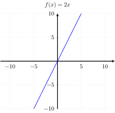
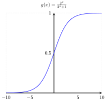
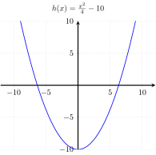
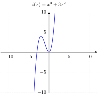
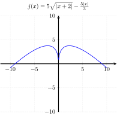
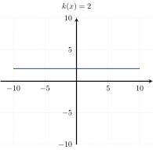
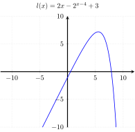

Course Notes for LIN 539
Fall 2022
Functions, also called maps or mappings, are ubiquitous in mathematics. The laymen usually thinks of things like \(f(x) = x + 1\) when they hear the word function, but the concept is much more general.
Anything can be thought of as a function as long as it takes a fixed number of arguments as its input and converts them to an output. Crucially, the output is not allowed to vary while the input is kept the same.
A car wash can be regarded as a function that takes as input a car and returns as its output a clean car (in an ideal world, at least). A dirty Dodge Viper comes out as a clean Dodge Viper, and a clean Audi A4 still comes out as a clean Audi A4. The output is always perfectly predictable from the input.
Suppose \(f(x)\) can be randomly chosen between \(x+1\) and \(2 \times x\). This is not a function because one and the same input can produce different outputs.
Let \(f\) be a function that takes as its input a number \(n\) and returns \(n+1\) on a weekday and \(n+2\) on the weekend.
This special property of functions is known as right uniqueness. Right uniqueness guarantees that functions are deterministic in the sense that one can predict the output from the input with 100% accuracy.
Caution: The functions used in programming languages are not necessarily functions in the mathematical sense because their output can vary even if the input stays the same.
import random import re
def random_output(number): # randomly choose between two outputs if random.choice([True, False]): return 2 * number else: return 3 * number
for _ in range(10): print(“The output of random_output({}) is {}”.format(5, random_output(5)))
Even though functions aren’t limited to mappings from numbers to numbers, this is certainly one of the most commonly encountered types of functions. We can classify these functions based on how quickly the output grows relative to the input.
In a constant function, the output is always the same independent of the argument. They follow the pattern \(f(x) = c\), where \(c\) is some fixed value.
All of the following are constant functions.
Linear functions follow the general pattern \(f(x) = kx + d\). They can be visualized as a line in a Cartesian coordinate system.
All of the following are instances of linear functions.
Explain why every constant function is also a linear function.
In a polynomial function, the argument is multiplied with itself a fixed number of times. This is expressed as exponentiation.
All of the following functions are polynomials.
When plotted in a coordinate system, polynomials aren’t straight lines but curves. Polynomial functions grow faster than linear functions, but a linear function may initially return higher values. Only as we move towards larger and larger numbers is a polynomial guaranteed to eventually outstrip a linear function.
Consider the linear function \(f(x) = 1000x\) and the polynomial function \(g(x) = x^2 - 9x\). The table below shows the growth of those two functions.
| \(x\) | \(f(x)\) | \(g(x)\) |
|---|---|---|
| 0 | 0 | 0 |
| 1 | 1000 | -8 |
| 2 | 2000 | -14 |
| 3 | 3000 | -18 |
| 4 | 4000 | -20 |
| 5 | 5000 | -20 |
| 6 | 6000 | -18 |
| 7 | 7000 | -14 |
| 8 | 8000 | -8 |
| 9 | 9000 | 0 |
| 10 | 10,000 | 10 |
| 100 | 100,000 | 9,100 |
| 1,000 | 1,000,000 | 991,000 |
| 5,000 | 5,000,000 | 24,955,000 |
Formally, a function is polynomial iff it can be rewritten to fit the template below, where \(k_0, \ldots, k_n\) are arbitrary numbers.
\[ f(x) = k_n x^n + k_{n-1} x^{n-1} + \cdots + k_1 x^1 + k_0 x^0, \]
Rewrite the formulas from the previous example so that they fit this pattern. For instance, \(f(x) = x^2\) can be rewritten as \(f(x) = 1 x^2 + 0 x^1 + 0 x^0\).
Reminder: \((a + b)^2 = a^2 + 2ab + b^2\)
Explain why every linear function is also a polynomial function.
Like polynomial functions, exponential functions involve exponentiation. But in a polynomial the argument of the function acts as the base, whereas in an exponential function it serves as the exponent.
All of the following are exponential functions.
Exponential functions grow even faster than polynomials, but once again this may only hold as we consider larger and larger values for \(x\). A polynomial function may initially return larger values than an exponential function.
Give an example of a polynomial function \(f\) and an exponential function \(g\) such that \(f(x) > g(x)\) for relatively small values of \(x\) (e.g. \(x < 100\)) but \(f(x) < g(x)\) for larger values.
As one considers larger and larger values for \(x\), some parts of a function become increasingly irrelevant.
Consider the function \(f(x) = x^3 + x^2\). For small \(x\), \(x^2\) contributes a significant proportion of the output value, 10% or more. But as we increase \(x\), the contribution of \(x^2\) becomes negligible, until it doesn’t even make up 1%.
| \(x\) | \(x^3\) | \(x^3 + x^2\) |
|---|---|---|
| 0 | 0 | 0 |
| 1 | 1 | 2 |
| 2 | 8 | 12 |
| 3 | 27 | 36 |
| 4 | 64 | 80 |
| 5 | 125 | 150 |
| 6 | 216 | 252 |
| 7 | 343 | 392 |
| 8 | 512 | 576 |
| 9 | 729 | 810 |
| 10 | 1000 | 1100 |
| 100 | 1,000,000 | 1,010,000 |
| 1,000 | 1,000,000,000 | 1,001,000,000 |
| 5,000 | 125,000,000,000 | 125,025,000,000 |
Often we do not really care about the precise value returned by a function, we just want to know the rough ballpark and how quickly the function grows. The Big-O notation was designed just for this purpose. Instead of a complicated function like \(f(x) = 15 x^5 + \frac{3 x^4}{6} - 500,000 x\), we can just write \(O(x^5)\) to signal that even though the full function may be more complicated, its overall growth pattern will resemble \(f(x) = x^5\) as we start looking at larger and larger values for \(x\).
While the Big-O notation has a fairly involved definition, the intuition is really simple: find the fastest-growing component in the function’s definition and remove everything else. The general principle is that exponential trumps polynomial trumps linear trumps constant.
| \(f(x)\) | Big-O |
|---|---|
| \(3x + 100\) | \(O(3x)\) |
| \(50x - x^2\) | \(O(x^2)\) |
| \(10\) | \(O(10)\) |
| \(2^x - x^{100}\) | \(O(2^x)\) |
The Big-O examples in the right column might strikes you as very incomplete representations of \(f\), but that’s the point: we use the Big-O notation when we do not care about the minor details of \(f\) and just want to see the overall growth pattern. In fact, things are often simplified even further: constants are replaced with just 1, and in linear functions we drop the multiplier. The table above then becomes the one below.
| \(f(x)\) | Big-O |
|---|---|
| \(3x + 100\) | \(O(x)\) |
| \(50x - x^2\) | \(O(x^2)\) |
| \(10\) | \(O(1)\) |
| \(2^x - x^{100}\) | \(O(2^x)\) |
We can now relate each type of function to a specific type of Big-O expression.
For each one of the formulas below, right down its simplified version in Big-O notation.
Every function has a domain and a co-domain. The domain is the set of objects from which its arguments can be drawn, and the co-domain is the set of objects from which outputs can be drawn. A function is undefined on any arguments that do not belong to its domain. One commonly writes \(f: D \rightarrow C\) to indicate that \(f\) is a function from domain \(D\) to co-domain \(C\).
Consider the function \(f(x) = x +1\). This actually represents multiple functions depending on how one picks the domain and co-domain.
Suppose \(f: \mathbb{N} \rightarrow \mathbb{N}\). Then \(f\) is a function from natural numbers (0, 1, 2, ) to natural numbers. In this case we have, for instance, \(f(0) = 1\) and \(f(500) = 501\). However, \(f(-1)\) or \(f(2.5)\) would be undefined because \(-1\) and \(2.5\) are not natural numbers.
Now suppose that we have \(f(x) = x + 1\) with \(f: \mathbb{R} \rightarrow \mathbb{R}\), i.e. \(f\) is a function from real numbers to real numbers. (We haven’t encountered real numbers yet, just assume that \(\mathbb{R}\) includes pretty much number you have encountered in high school, e.g. \(1\), \(1.38702\), \(-\frac{5}{17}\), \(\sqrt{2}\), and so on.) Now \(f(-1)\) = 0$ and \(f(2.5) = 3.5\).
Suppose that \(f\) is still defined by \(f(x) = x + 1\), but we have \(f: \mathbb{R} \rightarrow \mathbb{N}\). For each one of the following, say whether it is defined or undefined.
When a car wash is viewed as a function, its domain is the set of all cars (both dirty and clean), whereas the co-domain only contains clean cars.
What would be the domain and co-domain of a broken car wash that fails to remove even the tiniest speck of dirt?
Since it is so important to know the domain and co-domain of a function, those are usually specified before the precise mapping from inputs to outputs is given.
Let \(E\) be the set of English first names. Then the function \(f: E \rightarrow \left \{ 0,1 \right \}\) maps \(n\) to \(1\) iff \(n\) contains at least three syllables.
The mapping from arguments to outputs can be defined in various ways, e.g. in plain English, or as a formula like \(f(x) = \frac{(x + x^2 + 5)^{x+1}}{1000^x}\). For very simple functions whose name was already mentioned, one often writes \(x \mapsto y\) instead of \(f(x) = y\).
Instead of \(f(x) = 5 \times x - 3\), we may simple write \(x \mapsto 5 \times x - 3\).
Caution: Notice the difference between \(\rightarrow\) and \(\mapsto\). The first is used when specifying the domain and co-domain, whereas the latter indicates the concrete mapping from an argument to an output.
When the domain and co-domain of a function each have an order defined over them, one can ask whether the function is order-preserving.
Consider the function \(f: \mathbb{N} \rightarrow \mathbb{N}\) with \(x \mapsto 2x\). The domain of \(f\) is \(\mathbb{N}\), the set of natural numbers, which is also the co-domain of \(f\). The set of natural numbers can be ordered by \(\leq\) in the usual fashion, e.g. \(2 \leq 4\) or \(0 \leq 0\). The function \(f\) respects the order induced by \(\leq\). For any two \(x\) and \(y\) such that \(x \leq y\), it also holds that \(f(x) \leq f(y)\). For instance, \(4 \leq 10\) and \(f(4) = 8 \leq 20 = f(10)\).
Let \(f: \mathbb{R} \rightarrow \mathbb{R}\) be a function from real numbers to real numbers such that \(f(x) = x^2 - 5x\). Then \(f\) does not preserve order in all cases. We have \(3 \leq 5\) and \(f(3) = 9 - 5 \times 3 = -6 \leq 0 = 25 - 5 \times 5 = f(5)\). But we also have \(0 \leq 1\) yet \(f(0) = 0 - 5 \times 0 = 0 \geq -4 = 1 - 5 \times 1 = f(1)\).
This property of order preservation is known as monotonicity. You might have already encountered monotonicity in the special case of a function from reals to reals. In this case, one can draw the function as a line or curve in a coordinate system.



A function is monotonic iff it does not change direction: once it goes up, it cannot go down, and the other way round. However, it may stall, or never move at all. The functions \(f\) and \(g\) above are monotonic, but \(h\) is not as it changes direction, from going down to going up. Note that \(g\) is monotonic even though it rises more steeply at some points than at others — this is immaterial for monotonicity, it only matters that \(g\) never reaches a point where it suddenly changes direction and starts going down after having gone up before (or going up after having gone down before).
For each one of the following functions, say whether it is monotonic.




Give another example of a function that is not monotonic.
While such numerical functions are a good starting point for grasping the intuition behind monotonicity, they provide an incomplete picture. The concept of monotonicity is much broader than that, and it extends far beyond functions from numbers to numbers. See the unit on universals for various linguistic applications of monotonicity, none of which have anything to do with numbers.
Monotonicity is actually an umbrella term for two distinct properties: isotonic (monotonic increasing) and antitonic (monotonic decreasing).
Let \(A\) and \(B\) be arbitrary sets and \(\leq_A\) and \(\leq_B\) ordering relations over these respective sets. Then a function \(f: A \rightarrow B\) is isotonic (or monotonic increasing) iff \(x \leq_A y\) implies \(f(x) \leq_B f(y)\). We call \(f\) antitonic (or monotonic decreasing) iff \(x \leq_A y\) implies \(f(y) \leq_B f(x)\). A function is monotonic iff it is isotonic or antitonic.
For each one of the following functions say whether it is isotonic, antitonic, or neither.
Given an example of a function that is both isotonic and antitonic.
For many functions it won’t be the case that the every value in their domain is actually a possible output of a function. Given a function \(f: D \rightarrow C\), we use the term range to refer to the set of elements of \(C\) that are an output for at least one input in \(D\).
Consider the function \(f: \mathbb{N} \rightarrow \mathbb{N}\) with \(x \mapsto 2x\). Not every natural number is a possible output of this function:
The range thus does not contain all members of \(\mathbb{N}\). Instead, it consists of all even natural numbers, and nothing else.
Now suppose that we have \(f: \mathbb{R} \rightarrow \mathbb{N}\) with \(x \mapsto 2x\). For every natural number \(n\), \(\frac{n}/2\) is a real number and thus an element of \(\mathbb{R}\). Hence it must be the case that for every natural number \(n\) there is at least one element \(e\) in the domain of \(f\) such that \(f(e) = n\). So this is an example where a function’s range is identical to its co-domain.
For each one of the following functions, describe its range and say whether it is the same as the function’s co-domain. Justify your answer. As in many other exercises, getting the correct answer is less important than giving a good argument for you answer.